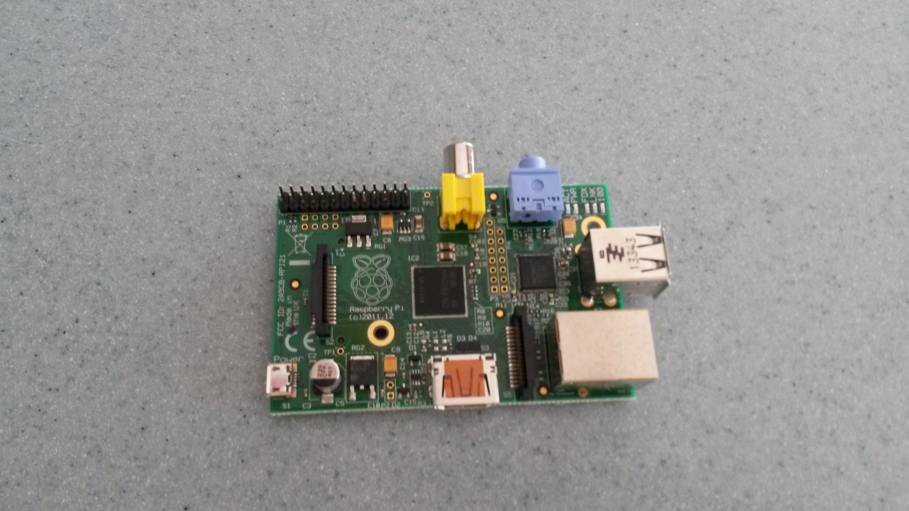
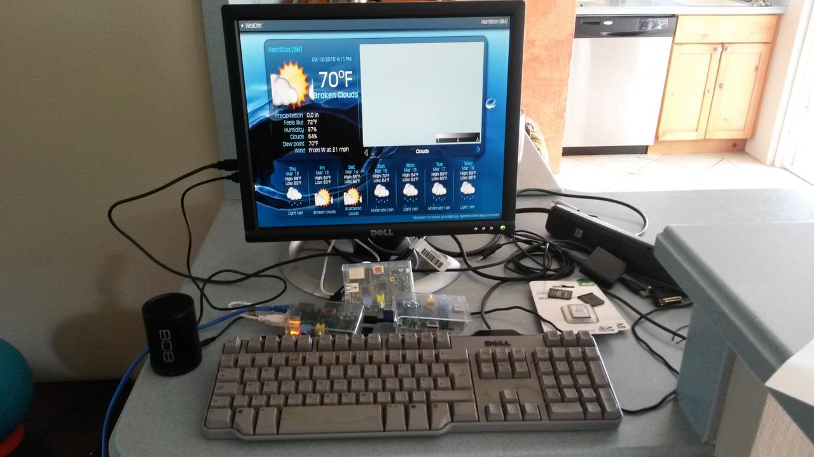
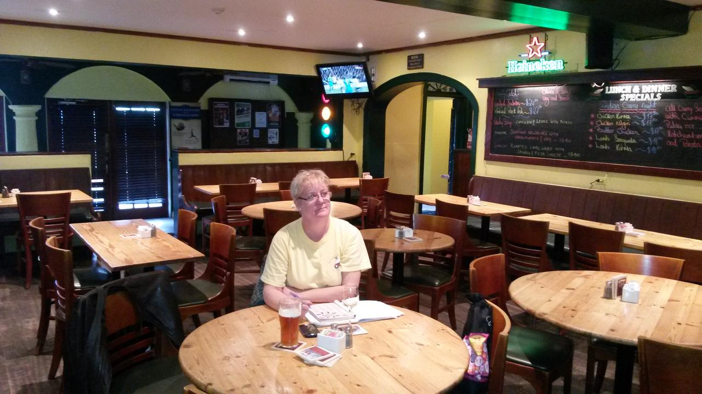

Bermuda 3 Bahamas 0
This afternoon Bermuda were playing Bahamas in a World Cup qualifier.
It was the second leg, but Bermuda, led by Nahki Wells, were already 5-0 win in the Bahamas last Wednesday.
This game hadn't been generally broadcast in Bermuda. But we had seen highlights, and the first many of us knew about the game was via a banner that was put out on the TV station.
As a long suffering supporter of the Mighty Blades I have rarely been in the position of being able to go to a game, already 5-0 up. I have also never been to a World Cup game before.
So today we set off early to the game on the moped. The game was a sell out, parking was likely to be tricky. In any case, the build up to the game would likely be fun.
It was cold. Not Canada cold, but Bermuda cold. Cloudy and damp, windy and looked like it could rain any minute. The rain held off.
The build up to the game was fun too. Many in the crowd knew one or more of the players well. There was excitement that we would see a few goals, and a slight fear that maybe things could unravel. And there were Gombeys :)
Bermuda did dominate the game from start to finish. The goalkeeper, Fredrick Hall, was substited at half-time. I am guessing that he was frozen, as the ball boys had all had a lot more work to do. It was a good time to give his back-up a chance to play, and he at least had some saves to make.
Nahki Wells won a penalty, then crashed the resulting kick against the cross-bar. This was close to half-time, Bermuda had already had 5-6 really good chances, but the ball didn't want to go in the net.
Earlier Wells had been fouled, about 30 yards out and needed treatment from the physio. He was then made to leave the field, and was not able to be there for the free-kick that required the treatment. Broken rules?
Justi Donawa had what looked like a painful injury to his foot, and had to be replaced.
Second half was more of the same, but Bermuda were increasingly getting the feeling that it was going to end 0-0. The players felt it and the crowd too.
Then Nahki Wells broke through and this time made no mistake, 1-0.
From this point every time Bermuda went forward, and that was frequently, they looked like scoring. The game ended 3-0. The Gombey Warriors will play Guatemala, away on the 8th of June, at home on the 16th.
Two last things.
- This is a very young Bermuda team. I heard the average age is just 21.
- The Bahamas also have a young team. They played a good game today, the game flowed, there were lots of entertaining moments. It can't have been easy travelling away already 5-0 down.
It was a great afternoon, two teams, refs and the crowd all played their part. Looking forward to the next games.
Pi Day at Chewstick
This Saturday the date is 3.14.15, March 14th, '15.
March 14th has become known as Pi Day, on account of the fact that the first three digits of the mathematical constant pi.
This year it is extra special, since the next two digits are 15, which corresponds to the year. After that, the next five digits of pi are 9:26:53.
To mark the occasion Chewstick at the new premises on 81 Front St is hosting a Raspberry Pi Day.
A raspberry pi is a $30 computer (Raspberry Pi) that runs off a phone charger. We will be making videos of people performing, playing games etc, so bring your camera, SD card, instruments to contribute your content as we build a Raspberry Pi media centre.
We will also have a retro games console running on a pi.
The plan is to start the event at 9:26:53am and run with it until 9:26:53pm.
I have three working raspberry pi's and some SD cards that can be used to host the operating system.
I have one pi running the Kodi media centre that I hope to add some Chewstick and Bermuda content to. The image below shows Kodi displaying the Bermuda weather.
I have another pi running a retro games console and a third running the Raspian operating system.
There is no need to bring anything but yourself to the event, but if you do have raspberry pi's or related hardware it would be good to bring them along too.
All going well, we will also have actual pies to eat too :)
For more information see this facebook posting.
Bermudaful Day
A couple of weeks back I had my sons and their partners visiting from Canada. They were having difficulty understanding why I am thinking it was so cold here.
I've lived in many places, but including hard Ottawa winters, but never felt as cold as Bermuda the last few weeks. It is all perspective.
We had good times while they were here, below is just one of those days.
Pink and blue limo
We'd decided to go to Spittal Pond. As we are down the west end of the island, that means 2 buses, or the pink and blue limo.
We were in luck, the number 7 bus pulled up just as we reached the stop. A sunny day, so the views along South Shore were spectacular.
We were soon in town and just had a bit of time between buses to look at Victoria Park and the web of ropes holding up trees that have been lifted back up since the hurricanes knocked them over.
Onto the number 1 bus and another beautiful journey. You are higher up on the bus, and see so a lot more. Plus it stops every now and again.
Spittal Pond

I have liked Spittal Pond for a lot of years. It is a place in Bermuda where you can really feel in a natural environment. Spectactular views and lots to explore.
It is also a place that changes through the seasons, so there is always something new to see.
This was the first time I had been since the hurricanes. There wasn't much sign of them on this walk. Just a fiew views that didn't used to exist.
But we were treated to a sunny day without much wind. The ocean always looks better in the sun. It lights up the clarity of the water and the pink sand beneath.
The path leads down to some rocks where in a few places there are actually steps cut out to make it a little easier to clamber over.
At the waters edge there were a couple of large parrot fish, bobbing around as the waves were breaking against the rocks.

Portuguese Rock
We took the little detour up to a rocky cliff overlooking the ocean. Here there is a brass plate that is a cast of an inscription that was found on the rock here. It has the date 1543 and some other marks that have been interpretted as "R. P." standing for Rex Portugaline.
1543 is nearly 70 years before the island was settled, indicating that there is more to the early history of this island than we are every likely to discover.

The farm on McGalls Hill
Once back at the road we decided to walk over the hill, past St Mark's church and down McGall's Hill to the Northrock.
Part way down the hill we stopped to look at a small banana plantation. The farmer, Henry, and his wife, Theresa, were there looking after the land and invited us down.
Henry delighted in telling us just what is invoved in growing bananas. He also showed us onions, giant cloves of garlic and new potatoes.
They had such patience in showing how all the different plants thrived. Henry also told us about the fruit salad tree.
Citrus fruit used to be a big thing in Bermuda. If you visit the island ask an older Bermudian about the citrus and they will tell you Bermuda used to have some of the best citrus fruit you can find.
Henry explained that you can even grow fruit salad trees here: a single tree that grows lemons, limes, oranges and grapefruit, all as a result of grafting buts from different fruits onto a wild lemon base.
All in all, it was a great day.
Mercurial Adjustment
So careful observers will note the project is running a little late.
The aim was to launch the site on February 1st. I am not quite ready to go live yet. I want a few more features implemented first.
I am also aware that there is a lot still to do. But it was always the plan to build features through the 80 day running of the competition.
This project has been a very interesting experience for me. At the start, I had a task that I knew I could get done in a few days. With stuff I had used in the past. But, I wanted to learn some knew stuff. angular.js was one thing.
I really like python and have enjoyed working with django over the years. It has been a struggle at times. I've always loved what the project is doing, it has been a constantly evolving project. Often, knew releases would break old sites. This was actually a good thing, a bit of reading and you could find the solution. And if you implemented it, your code was generally better.
I have loved django migrations. I like to develop sites as they are being run. Now one tricky bit is knowing when you can (or should) let others loose on the site. They might put work into it that would be lost by changes you want to make.
This is where these migrations come in very handy. Over the course of what I have been doing I have been running:
python 80days/manage.py makemigrations
and/or:
python 80days/manage.py migrate
more or less at random (as I got to know what the errors really mean, so less random as time went on. And what has been cool is that pretty much every time they have lead me through the process and done exactly what I wanted with pretty minimal fuss.
Murphy's law dictates that I will now encounter a nightmare with migrations, at some, inconvenient point. The good news is I have good confidence in these migrations. In particular, I love the way you get the code for the migration. So, if I am doing something scary, or if it all breaks, then I can take a look at it.
Angular
This has been a rocky ride at times. On the face of it, it is doing something elegant and simple. But it is doing what it does inside the DOM model as implemented by various browsers. These browsers are trying to be helpful. So I spent an afternoon wrestling with angular directives for table rows. I just wanted to write a partial piece of html for each row. Now it seems this is really tricky to do in angular because of the way browsers try to be helpful with broken table code.
Overall, I am happy with where things are. There are a lot of areas I would like to learn more about. I need to spend an afternoon with the node/angular testing setup. I really do need to start writing those tests.
In short, there are a lot of things I know can be done better, but most are good enough for now and I can work on the pain points as they become more aparent,
Summary
The good news is that after all the research and experimenting I have found a lot of the gotchas. In short, I have the tools and have figured enough about how they work that I should be quite productive from here on in.
Was cookiecutter a good idea? Very much so. It introduced me to lots of things that I would not of explored at this point otherwise. Some bits I have pretty much forgotten about, but I think most of the stuff I have explored is mentioned in this blog somewhere, or in github. So, if nothing else, it is there if I need to refer to it.
And finally..
So the mercurial adjustment works like this. Every software project runs late. They run late for lots of reasons. Most of them good.
Now the planet mercury orbits the sun in just under 88 days. But here on planet earth, in that time the earth moves, so that it is actually nearly 116 days before the earth, mercury and sun are in a similar alignment. This probably needs to be done in a jupyter notebook, so for now, the deal is that depending on your frame of reference and definition of a day, 80 days could arguably be deemed to be a shade over 105 days as most of us here on earth know them.
So next time your n day software project is running late, come into work dressed as Mercury ;)
Are we nearly there yet?
As of last night I have competition entry all working.
You can see all the competions being run. If a competition has not started yet or is still in progress you can enter.
To enter, just give the nickname you want to use for the competion.
Next job is to add code to allow competitors to create and join teams.
This shouldn't take too long given what I now have.
Angular velocity
So it has been a while since I blogged about the 80 day project.
This is largely due to most of my free time has been spent working on the code.
Just to recap, 77 days into the project I still had quite a bit to do. Most of the work up to that point had been on getting pieces together, decide what tools to use, learning those tools.
The next job was to move the angular code around a bit and try and get django serving it all. In particular, I had decided it was probably worthwhile to have the angular.js partial html pieces go through the django template engine.
Getting npm up and running, with a recent enough version can be tricky, but there was an excellent guide on Installing npm on Ubuntu
With moving all the files around, .bowerrc needed editing a few times to point it at where the bower_components were now made to be installed.
Ever since the Global Hackathon, Team Bermuda I have had mild paranoia that cross-site-request-forgery is going to bite me at some point. I am hoping that by serving everything under django I will avoid that nightmare. In the meanwhile, I did at this csrf fix
A previous post, Nginx on koding.com came in useful for setting up postgres on koding.com as I decided it was more than time to get this thing running on a cloud based machine.
I have not found myself using django-angular, but the django angular integration docs have been an enormous help in highlighting issues in integrating django and angular.
In amongst all this I decided it was time to add django quiz to the mix.
This was mostly painless, following the django-quiz docs, but when I fired up the server it failed. The problem was down to me using django-allauth which effectively removes auth.User. The fix is to use settings.AUTH_USER_MODEL if you want to reference the User model in your own models.
I made the user model fix and made a pull request. Happily, the project maintainer actioned the request within the hour (many thanks Tom!) and I was able to update to the new version with:
pip install git+https://github.com/tomwalker/django_quiz.git
By February 1st I was starting to get comfortable with angular and the pieces were coming together. I have some simple partials, I have angular calling the django rest API and I have the beginnings of some views.
The next task is to display competitions a user can enter and provide an enter button. At this point I did a bit more thinking and reading. Deciding what logic to put in angular and what to put in django views and api calls needs a little thought.
From here the plan is:
- get the competion list and competion entry features working
- get team creation and team membership features implemented
- get the site up and running in the cloud
I have a simple test server on koding.com, but want to run the actual site on a different instance.
Got the ingredients, lets cook this thing
This post is likely going to be a bit of a mixture. It started out as an account of what I am doing today, but I think it might turn into an account of why a 3 day project can take 80 days and why that isn't always a bad thing.
So I have had this goal for 80 days to create a website. Now this hasn't been my only goal in this period. Actually, I have had a lot of other stuff going on. Oh, and there was Christmas and New Year and of course the annual flu/cold/sore throat fun to deal with. Also, this is supposed to be a fun project and I have other fun things I have been doing at the same time.
I have also been using it to learn some new stuff. Now this is always a dilemma with IT: learn to do things the proper way, learn about the latest tools or just use what you already know?
I could have built this thing with pure django and simple html templates in 2-3 days I am sure. Well not quite that because I need all these things too:
- authentication, user registration, preferably supporting third party openID management. That is where django-allauth comes in.
- database migrations
- deployment to cloud. I think I will use koding.com
- code generation. I wrote some simple code generators. I should be able to include these in a cookiecutter so my next project will be much quicker
- I am learning angular.js. I already see the promise in this and it should strengthen my javascript skills which will help with the next phases of the project.
So I have the ingredients together. I think I know most of the problems I will have, just have to put this thing together.
First thing: angular dates are in milliseconds.
Now with this knowledge I have the angular showing today's date, 80 days from now and 80 days ago.
Next stop is to get a form to register a team. There is quite a bit to learn here. I will need to figure out how angular calls REST api's and of course deal with the form stuff too.
OK, so thanks to codeschool I now have a good idea of how most of this angular stuff hangs together.
The next task is to see if I can get data from the django rest services. Before I do that I think it is time to re-organise the code so that it can all be served by the django server. I suspect this might get tricky.
Tomorrow I should be in town in the morning, so I decided this would be a good time to see if I can get this thing running on Gonzalo, otherwise known as the laptop without an escape key. This thing also has a battery with a life of about 5 minutes. But I like it in a weird sort of way. It needs more memory too, but that should be an easy fix. I think it might turn into that broom with 20 new heads and five new handles.
Will be a good test of whether I can run everything on another machine without too much pain. With the screensaver doing the, "all work and no play", I think it is time to take a break.
The Pink and Blue Limo
When I first met ace-girl I was living in Ottawa. One day she was heading out into town on one of her missions. I asked if she wanted me to run her wherever she was going in the car.
I have to confess, I don't really enjoy driving around Ottawa. In winter, when it is -25C outside then the car is a nice option to have. But I know I will spend a chunk of time stuck in traffic. Plus, Ottawa is a grid system, there are traffic lights every block. But, if ace-girl is running late then again the car can be handy.
This day, she just responded, "Don't worry, I will just take the Red and White Limo."
Regular readers of this blog (if there are any! -- note to self, look into google analytics) will know that I have a bit of a thing about red and white, entirely due to the Red and White Wizards.
So my ears pricked up at the mention of red and white. I was a little concerned ace-girl seemed to be planning to take the limo to get where she wanted. Really, I would much rather run her there in the car.
She quickly put my out of my misery. The buses in Ottawa are red and white, so ace-girl just referred to them as the red and white limo.
I have always liked the bus. I grew up in Sheffield, UK at a time when the bus service was quite excellent. Being under 16 I could go anywhere in town for just 2 new pence. Adults had to pay the princely sum of 10 new pence. I would walk down to the bottom of our road and a bus would always turn up within 10 minutes or so. No need to check the timetable: the buses were often 5 minutes or so off schedule, but they were so regular that it didn't matter. Sheffield buses were Brown and Cream Limos.
Not really my favourite colour scheme, red and white would have been better, but then the blue and white half of the city might never have taken a bus. In any case, these things looked like giant ice-cream sandwiches: a block of vanilla ice cream sandwiched between two wafers.
The ride into town was always fun. I would sit upstairs, preferably at the front where you could see everything. My journey was down Abbeydale Road. It felt like you could literally find anything you wanted on Abbeydale Road. Looking out of the bus I would always notice new things. There was the cycle shop that had a penny farthing mounted above the shop window. A bit further down there was Bardwell's electronics store. This was like a little hardware store only it sold electronic components: resistors, capacitors and these new fangled things called transistors. Oh, and you could still get valves there too.
Well move on 30 or so years and I am now in Bermuda with ace-girl. Nowadays she takes the Pink and Blue Limo.
{kind=link}
For anyone who enjoys buses, the Pink and Blue Limo has to be one of the best bus experiences in the world. First of all, the buses are pink and blue. Pink to match the sand on the beaches, blue to match the sky.
The bus stops are marked by pink or blue poles. Pink means the bus is heading in to town, blue means it is heading away from town.
I am lucky, I live at the top of a hill between South Shore and Middle Road. I can walk down to South Shore and take the 7, or I can go to Middle Road and take the 8. There is a bus every half hour, happily at my point in the island the buses are off cut by 15 minutes, the result is average waiting time should be less than 10 minutes most of the time.
I also have a moped. This is a great way to get around the island, but on occasion I head into town and end up having a couple of beers. One such occasion was last Wednesday. The Red and White Wizards were playing Tottenham Hotspur in the first leg of the League Cup semi-final.
The Blades are two divisions below Spurs. Just getting to this semi was quite an achievement. I headed in to town with ace-girl to watch the game.
As you can expect, for such a major fixture the bar was packed out:
I was fearing the worst. The Blades have actually been doing really well in the cups since Nigel Clough took over as manager. But after years of following the Blades I know not to get my hopes up. I really just hoped that the game wouldn't be over in 20 minutes with us 3-0 down and the prospect of a pointless game at Bramall Lane the following week. In fact, first half the blades looked in control, even had a couple of half chances.
The longer the game went on, the more I dared to hope. Spurs did get a penalty, which they scored, but the game finished 1-0. As this is two legs, the blades are just 1-0 down at half-time with the second leg due to be played in front of a sell-out crowd at the Lane. Tomorrow could be fun.
So, suffice to say, riding home on the bike was not an option. We left the bike with one of the people working in the bar. His bike was off the road due to a scary accident, happily he just had a bit of road rash and some bruises.
The next day I took the Pink and Blue Limo in to town to collect the bike. I walked down to the 7, but was sat on the wall admiring the view and looking for my ticket when the bus sailed past. Not the driver's fault, I wasn't at the actual stop. Fortunately, I had time to walk over the hill, getting there just in time to admire the view before the 8 turned up.
Bermuda bus etiquette is quite complex. The buses are smaller than normal buses and only single decker, mainly because the roads here are pretty narrow. If you are on the bus you wait until it has come to a stop before getting up from your seat to get off.
The school children always give up their seat to older people. Everyone greets the driver as they get on the bus. Usually, there are a bunch of regulars on the bus. It is Bermuda, everyone knows everyone and you see people catching up on news as they encounter friends and relatives.
I always like to get a seat by the window. On the number 7 the views of the South Shore beaches are breathtaking. On the number 8 you are inland for much of the journey, but it is never dull. You will get glimpses of the ocean, but also see lots of the wonderful coloured houses and of course all the plants and trees.
Since the hurricanes Gonzalo and Fay, back in October there has been lots more to look at. First, there was all the damage to the trees as well as some property damage. Within a couple of days everything was pretty much running as normal, but everywhere you looked there were people helping clean up. Either soldiers in the regiment, those working for the government as well as many proud Bermudians working together to get the island back on its feet.
Now the hurricanes took out a lot of trees, so now you can see things you never knew were there. The older Bermudians just smile, they have seen it before, after Fabian or Emily or Felix.
The journey is a good time to think, to slow down, experience another world that is Bermuda.
I am writing this post today in part because the Pink and Blue Limo is off the road. Unfortunately, the government here is short of money. As a result, they have been trying to reduce the wage bill.
This is coming at a time when the island is full of excitement having won the right to host the America's Cup in 2017. There is a lot of work to do to get the island ready for this. But the government is broke. And to deal with that they made an agreement with the unions to cut wages in return for days of furlough.
I don't know the ins-and-outs of it all, but the hope was this would be a temporary measure and that after a year or so the budget would begin to balance and hours would be restored.
This now doesn't look like happening and so the last two days there have been peaceful demonstrations in town in protest.
Here is hoping that all parties will get around the table and work out a solution that works for all of Bermuda and ace-girl can get back to her Pink and Blue Limo.
Oh, and if the blades could somehow pull off a miracle tomorrow, that would also be good ;)
Angular Momentum
On Friday I got to the point that the angular seed app is now checked into my 80days repository.
Today's mission is to start turning that into the app I really want.
One of the first things I want to do is fix up angular so that it uses different markers for its template substitution.
Django uses '{{' and '}}' to mark blocks that the template engine needs to pay attention to and do substitutions. Actually, the django template languate has two escape patterns:
- {{ and }} are used to mark variables to be expanded
- {% and %} are used to mark django template tags. These get used for things like marking for loops and the like
Now by an unhappy coincidence, angular.js also uses {{ and }} to mark stuff for expansion.
Happily, angular allows you to over-ride these markers, as follows:
var my_app = angular.module('MyApp').config(function($interpolateProvider) { $interpolateProvider.startSymbol('{$'); $interpolateProvider.endSymbol('$}'); });
In fact, since I already had some code in my app.js I just added the extra config code, so my app.js now looks like this:
'use strict'; // Declare app level module which depends on views, and components angular.module('myApp', [ 'ngRoute', 'myApp.view1', 'myApp.view2', 'myApp.version' ]). config(['$routeProvider', function($routeProvider) { $routeProvider.otherwise({redirectTo: '/view1'}); }]). config(function($interpolateProvider) { $interpolateProvider.startSymbol('{$'); $interpolateProvider.endSymbol('$}'); });
So, making some progress, but I still can't figure out this controller thing and how to tie it all together. Time to go back to codeschool.
In particular, their shaping up with angular introduction. I had to register with codeschool. Thankfully, that was painless bar having to create yet-another-password.
But it has been worth it. You can watch the videos at 1.5x or 2.0x or slow them down. It would be great if they took the mythtv trick and shifted the frequency of voices down so that the presenters don't sound like chipmunks on speed when you speed things up.
The good bit is you can click on "Start Challenges" as soon as you are bored with the video.
Once in the challenges, the "check my work" button is genius and extraordinarily helpful.
Angular date filter
I just fell in love with the angular date filter. Feed it a unix datetime and it does the right thing. Eg Unix time began 1969/12/31 @ 8:00PM in Bermuda, note the four our offset from UTC.
See this github commit for some code.
Thanks
Thanks to @ergoemacs on twitter who posted a link to their excellent mini tutorial on magit-mode: git mode for emacs. I had this installed already, but never quite plucked up the courage to try it. Wow: git in emacs: lovely jubbly!
And thanks to stack exchange for this tip on how to diff a single file with magit, Answer: just hit tab in the magit status buffer on the line for the file you want to diff. More lovely-jubbly.
And finally, thanks to Snowy, who helped with the coding:

I met Bill's Gates and got the t-shirt
Those who know me probably think that Bill Gates is not exactly on my top ten list of people I would like to meet.
I've been an free and open software enthusiast for longer than I care to remember. Let's just say that over the years Bill hasn't exactly been a friend of open source. To be fair, it pretty much threatened to destroy his rather lucrative business model.
To some extent it has. Bill has moved on, so has Steve "linux is a cancer" Balmer. Microsoft is making more and more code available as open source. I would guess they have realised that if you want to be relevant in today's software world you need your stuff to run on linux, or at least play nicely with that platform.
There is a lot going on in the tech world, it isn't clear how it is all going to pan out. But free and open source is stronger than ever.
Last night, my ace-girl and I wandered down the hill to the local hostelry.
As I blogged a few weeks back, Saturday there is a DJ at this place and it is often a fun night. We were planning to meet another friend who had just got back to the island.
We arrived and things were still quiet. They were showing some highlights from the FA Cup on the TV. I love the FA Cup, always have done. It is when the lower league teams get a chance to show what they can do against higher clubs. Yesterday was a great day for the underdogs. Bradford City, also known as the Bantams (curiously, google in their soccer info used the name Bantams rather than Bradford City. It was odd, because every other club was listed by their more formal name. It was Sheffield United, not the Blades playing at Preston.
There were quite a few people having dinner at the place and 2-3 were celebrating birthdays. DJ Uncle was doing his round of the room, figuring out his audience.
Around this time a guy walked by wearing a t-shirt and a silver tie, all sparkles and glitter, obviously top quality as it was ready-tied and held around his neck by a piece of elastic. I saw the words, "Bill's Gates" on his t-shirt. My curiousity was peaked and we got talking.
It soon became clear it was the guy's birthday. He introduced himself as Bill Gates (or it might have been Bill's Gates). There may have been some alcohol involved, so details are a little blurry. But the gist was he was founder member of "BFBC". The F is along the same lines as the f in swfiua. So it was "Bill's F* Boat Club".
Clearly, this was my chance to be photographed with the man himself:

I can report that Bill was a fine upstanding character and was even kind enough to give me one of his t-shirts:

Now in case you haven't heard Bermuda has been chosen as the venue for the 2017 America's Cup. There is quite a bit of excitement about the island due to this. Maybe BFBC will enter the race :)
Of course, Uncle played Happy Birthday for Bill and the others with birthdays.
I have been on a bit of a Springsteen kick that last week or so, something to do with starting to learn some tunes from my "Bruce Springsteen easy guitar":

Ace girl asked Uncle if he would play some. And in light of the giant killings in the FA Cup and with the hope of more to come from the Red and White Wizards it was appropriate that he should choose Glory Days.
Thanks Bill and everyone who helped make last night a fun time.